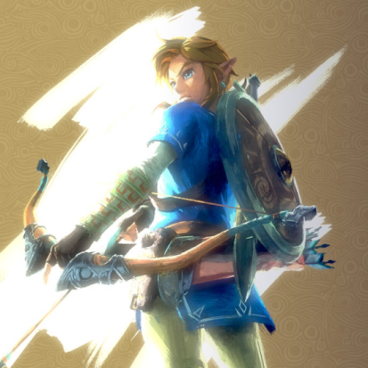

새로울게 별로 없기 때문에
리메이크 해서 특출나진게 있냐하면 그건 잘 모르겠음
근데 그만큼 원작 재현이 ㅆㅅㅌㅊ 라는 말
지금 평점 96은 당연히 원작 버프가 확실히 낀걸로 보이고
원작 없이 이런 겜이 젤다 이름 없이 지금 나왔다면 냉정하게 96까진 아니었을듯
다만 원작 재현이랑 추억팔이 진짜 이만큼 잘 한 리메이크를 본적이 없고
다른 것보다 브금이 진짜 쳐돌았음 개애미씨발
브금 편곡 수준이 과하지 않고 존나 적절한데
ㄹㅇ 브금이 씹캐리하는 수준
그래픽 좋다고들 하는데 독모드로는 해상도 낮아지는게 자주 눈에 띄었고
닌텐도는 그림자나 계단현상 관련 문제를 이젠 유기해버린게 아닐까 느껴질 정도로 가끔 아쉬운 부분이 꽤 있었음
대신 미감이나 그래픽 그 자체는 진짜 존나 아름다움
프레임도 단 한번도 끊김없이 부드럽게 돌아갔음
인형 얼굴같은 캐릭 디자인은 걱정 했던 것보다 크게 방해되진 않았고
그래픽이 존나 좋다고 하는 말엔 동의가 안 되지만
닌텐도가 잘 하는 방식으로 그래픽을 깎긴 한 것 같음
물의 질감은 과장되어서 보이고, 풀도 질감이 과장되어서 이런 요소들이 전체적으로 조화되니 아름답게 보임
닌텐도 퍼스트 게임 중에서 가장 그래픽이 '닌텐도식'으로 좋은 게임인듯
시오 아직 안 해본 사람은 옛날거 이제 하지 않고 이걸로 입문할 수 있고
이미 해본 사람은 추억팔이 좆되게 할 수 있다는 점에서
나왔어야 했던 게임인건 확실한듯